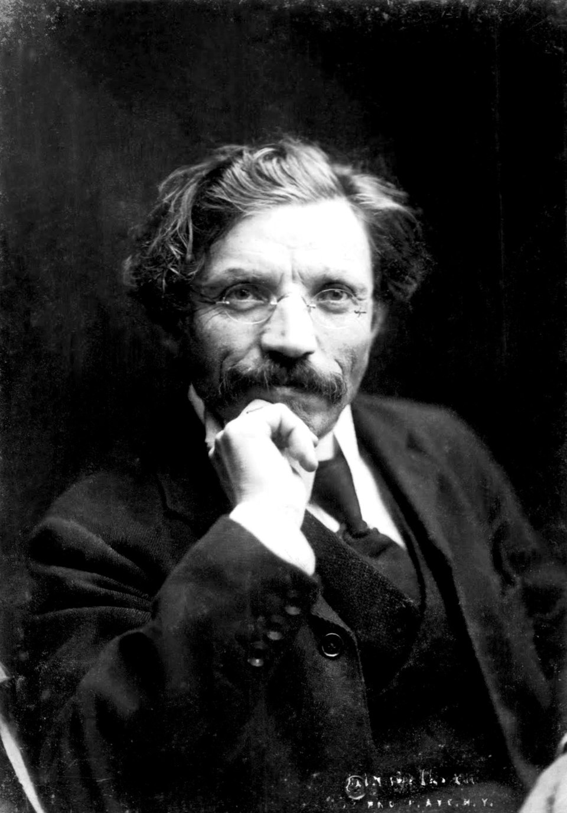

כשחושבים על שלום עליכם, חושבים בדרך כלל על טוביה החלבן, הדמות האהובה שסיפוריה היוו מאוחר יותר השראה למחזמר המפורסם בעולם כנר על הגג. באמצעות טוביה, הפך שלום עליכם לאחד הקולות המשפיעים ביותר של החיים היהודיים במזרח אירופה, כשהוא משמר את השפה, ההומור והמאבקים של השטייטל היהודי עבור הדורות הבאים. המחזמר כנר על הגג, שהועלה לראשונה בשנת 1964, התבסס על סיפורי טוביה שלו והציג בפני מיליוני אנשים ברחבי העולם את עולמה של יהדות מזרח אירופה.
עם זאת, פחות מוכרת היא יצירת מופת נוספת של שלום עליכם: מוטל בן פייסי החזן (מוטל, בן החזן), הרומן האחרון והבלתי גמור שלו. הספר נכתב בין השנים 1907 ל-1916, ועוקב אחר מוטל הצעיר ומשפחתו כשהם עוזבים את השטייטל העני שלהם במזרח אירופה ויוצאים למסע הארוך לאמריקה. הרומן מתאר בצורה חיה את אחת החוויות המכוננות של ההיסטוריה היהודית המודרנית: הגירה המונית ממזרח אירופה לארצות הברית.
שלום עליכם ואנטוורפן
הקשר בין שלום עליכם לאנטוורפן לא היה ספרותי בלבד. לאחר שעזב את האימפריה הרוסית בעקבות פרעות 1905, הוא בילה שנים בנסיעות ברחבי אירופה, כולל שהות בבלגיה. במהלך שנים אלו הוא פירנס את עצמו באמצעות קריאות פומביות של יצירותיו בפני קהל יהודי ברחבי היבשת.

בעיקר, בינואר 1914, ביקר שלום עליכם באנטוורפן במהלך אחד מסבבי הקריאה שלו באירופה. דיווחים בני הזמן מתארים כיצד קהל של כאלף איש התכנס ב"סירקל ארטיסטיק" (Cercle Artistique) באנטוורפן כדי לשמוע את הסופר היידי המפורסם קורא הן מיצירותיו המפורסמות והן מכתבי יד שלא פורסמו. האירוע מוכיח את חשיבותה של העיר כמרכז של חיים יהודיים ערב מלחמת העולם הראשונה.
ביקור זה משמעותי במיוחד מכיוון שאנטוורפן מופיעה באופן בולט גם ב*מוטל בן החזן*. בין אם נכתב בהשראת תצפיותיו שלו, בין אם בהשראת שיחות עם מהגרים ובין אם בשניהם, תיאורו של שלום עליכם את אנטוורפן הוא חי ואותנטי באופן בלתי רגיל.
אנטוורפן: השער לאמריקה
בין שנות ה-80 של המאה ה-19 למלחמת העולם הראשונה, מאות אלפי מהגרים יהודים מהאימפריה הרוסית, גליציה וחלקים אחרים של מזרח אירופה עברו באנטוורפן בדרכם לצפון אמריקה. נמל העיר הפך לאחת מנקודות היציאה החשובות ביותר להגירה טרנס-אטלנטית. ארגוני סיוע יהודיים, חברות ספנות וקהילה יהודית מתרחבת צמחו לצד תנועת הגירה זו.
במוטל בן החזן, אנטוורפן אינה רק תחנה בדרך. היא מצוירת כצומת דרכים בינלאומי שוקק חיים, מלא במהגרים הממתינים לאוניות, עוברים בדיקות רפואיות, מחפשים קרובי משפחה וחולמים על חיים חדשים מעבר לאוקיינוס.
מוטל הצעיר נפעם מיד מהעיר. אחת התצפיות הראשונות שלו נוגעת לנקיון שלה. הוא מתפעל מכך שהרחובות נשטפים ומקורצפים, מראה שהיה נראה יוצא דופן למהגרים רבים שהגיעו מעיירות קטנות במזרח אירופה. במקביל, הוא שם לב שרובעי המהגרים צפופים, רועשים, בוציים ומלאים באנשים מכל קצוות העולם היהודי.
הצד האנושי של ההגירה
מה שהופך את הפרק על אנטוורפן לבעל ערך כה רב הוא ההתמקדות שלו באנשים פשוטם.
מוטל נתקל במשפחות שהופרדו בשל תקנות ההגירה, בילדים שנתקעו בזמן שהמתינו לאישור להפליג, ובמהגרים שבילו חודשים ואף שנים בניסיון להגיע לאמריקה. סיפור מרגש במיוחד נוגע לילדה צעירה בשם גולדי (Goldele), שמשפחתה הורשתה להמשיך לאמריקה בעוד שהיא נאלצה להישאר מאחור באנטוורפן משום שהרופאים גילו שהיא סובלת מטראכומה, מחלת עיניים מדבקת.
סיפורים כאלה לא היו בגדר בדיון בלבד. במהלך תקופה זו, רשויות ההגירה האמריקאיות בדקו בקפידה את הנוסעים המגיעים לאיתור מחלות כגון טראכומה. מהגרים רבים מצאו את עצמם מעוכבים, מסורבים או מופרדים מבני משפחתם כתוצאה מכך. סיפורו של שלום עליכם משקף את החרדות האמיתיות שעמן התמודדו אלפי מהגרים שעברו באנטוורפן בדרכם לארצות הברית.
ארגוני סיוע יהודיים באנטוורפן
היבט מרתק נוסף של הפרק הוא תיאורו של מוטל את המוסד המכונה "קורה" (Cura).
ה"קורה" משמשת כמקום שבו מהגרים מקבלים סיוע, מידע, ביגוד, עזרה רפואית ותמיכה בזמן ההמתנה ליציאה. מוטל מתאר את אנשי הצוות המסייעים למטיילים, מתעדים מידע, מחלקים סיוע ומטפלים במהגרים פגיעים.
למרות שהוא מוצג דרך עיניו של ילד בדיוני, המוסד דומה להפליא לארגוני הצדקה היהודיים שפעלו באנטוורפן בתקופת ההגירה. רישומים היסטוריים מראים כי ארגוני סיוע יהודיים מילאו תפקיד מכריע בסיוע לאלפי המהגרים היהודים ממזרח אירופה שהגיעו לאנטוורפן עם מעט כסף ומעט קשרים.
הפרק מזכיר לנו שאנטוורפן לא הייתה רק נמל. היא הייתה גם מקום שבו קהילות יהודיות ארגנו רשתות סיוע נרחבות עבור אלו שחיפשו עתיד טוב יותר.
החיים היהודיים באנטוורפן
אנטוורפן של מוטל היא יהודית ללא ספק.
הוא שומע יידיש מדוברת ברחבי העיר ונתקל באחיו היהודים מעשרות עיירות ואזורים שונים. הוא אפילו מבקר במה שהוא מכנה "בית כנסת טורקי", כנראה התייחסות לקהילה הספרדית באנטוורפן, שמסורותיה נראו אקזוטיות ולא מוכרות למהגרים אשכנזים רבים ממזרח אירופה.
תצפיות קצרות אלו מספקות הצצה נדירה לגיוון של החיים היהודיים באנטוורפן בראשית המאה העשרים.
חלון ספרותי לעברה של אנטוורפן
כיום, מוטל בן החזן נותר אחד התיאורים הספרותיים החשובים ביותר של ההגירה היהודית ממזרח אירופה לאמריקה. באמצעות הומור, חמלה וקולו הייחודי של מספר ילד, שימר שלום עליכם את חוויותיהם של אינספור מהגרים שמסעותיהם עברו באנטוורפן.
עבור היסטוריונים של אנטוורפן היהודית, הפרק "נפלאות אנטוורפן" (Wonders of Antwerp) מציע משהו בעל ערך מיוחד: דיוקן ספרותי בן הזמן של העיר כפי שהופיעה בפני מהגרים יהודים לפני למעלה ממאה שנה. דרך עיניו של מוטל, אנו רואים את אנטוורפן לא רק כעיר נמל, אלא כמקום של המתנה, אי-ודאות, תקווה והתחלות חדשות.
הפרק הופך למדהים עוד יותר בשל העובדה ששלום עליכם עצמו עמד בפני קהל באנטוורפן בינואר 1914, שנתיים בלבד לפני מותו. אותה עיר שקיבלה את פניהם של אלפי מהגרים יהודים בדרכם לאמריקה, קיבלה גם את פניו של הסופר היידי הגדול בדורו.
עבור משפחות יהודיות רבות שעזבו את מזרח אירופה, אנטוורפן הייתה התחנה האחרונה לפני העולם החדש. בדפיו של מוטל בן החזן, חוויותיהם — ומקומה של אנטוורפן במסע זה — ממשיכים לחיות.